Adidas Pulse: a strategy to show up where people search today
An executive proposal for adidas: stop selling with discounts and become a brand that “performs anywhere”, with an AI layer connecting product data, personalization and commerce. I led the search front: why AI assistants could not see adidas.com, how to build verifiable authority and which keywords were one step from page one.
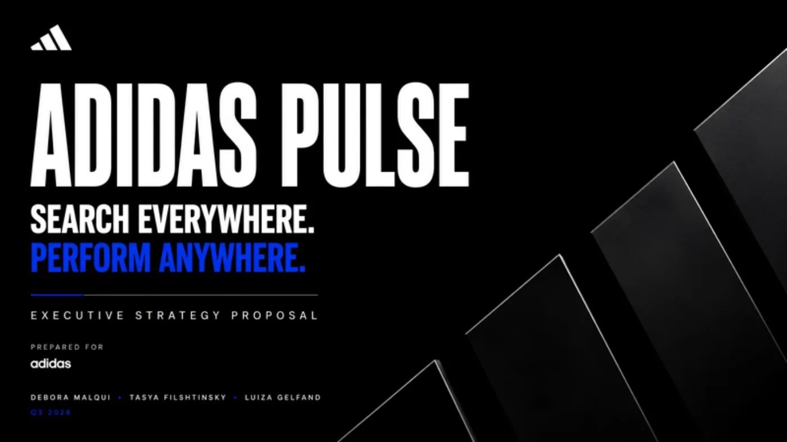
The proposal: from discounts to performance
The starting point was a simple observation: adidas’ live ads revolved around “up to 40% off”, while product discovery was fragmenting across TikTok, AI assistants, social and marketplaces. The proposal changes the principle: adidas does not sell products, it powers performance and personalizes it. Three priorities: premium positioning, a platform (Pulse) that is a single AI layer connecting product data, assets, personalization and commerce, and a seamless experience across web, app, stores, social and marketplaces.
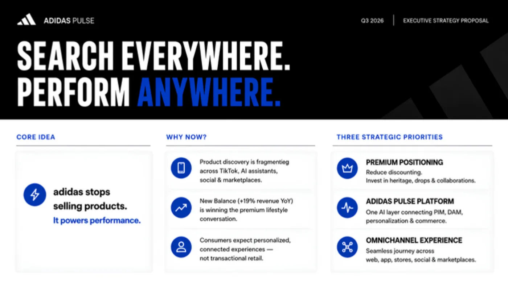
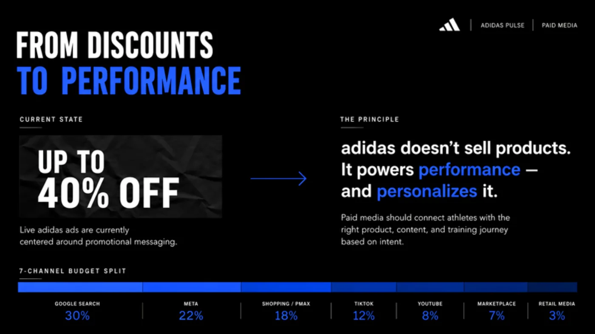
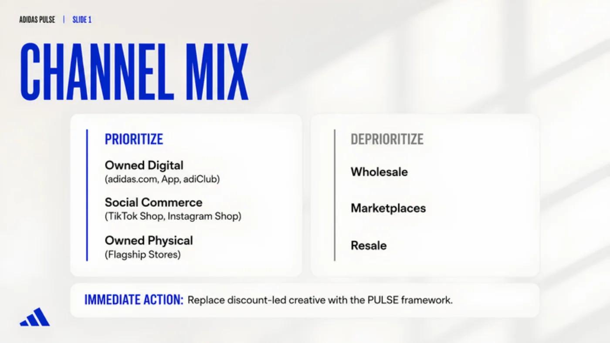
Swipe sideways or use the arrows. Tap a screenshot to enlarge it.
My front: SEO 2.0 + AIO, visibility beyond Google
“Search Everywhere” means people no longer search only on Google: they ask an AI assistant, watch a video or check a community. My part was to build the full journey: search everywhere, understand intent, create authority and measure impact.
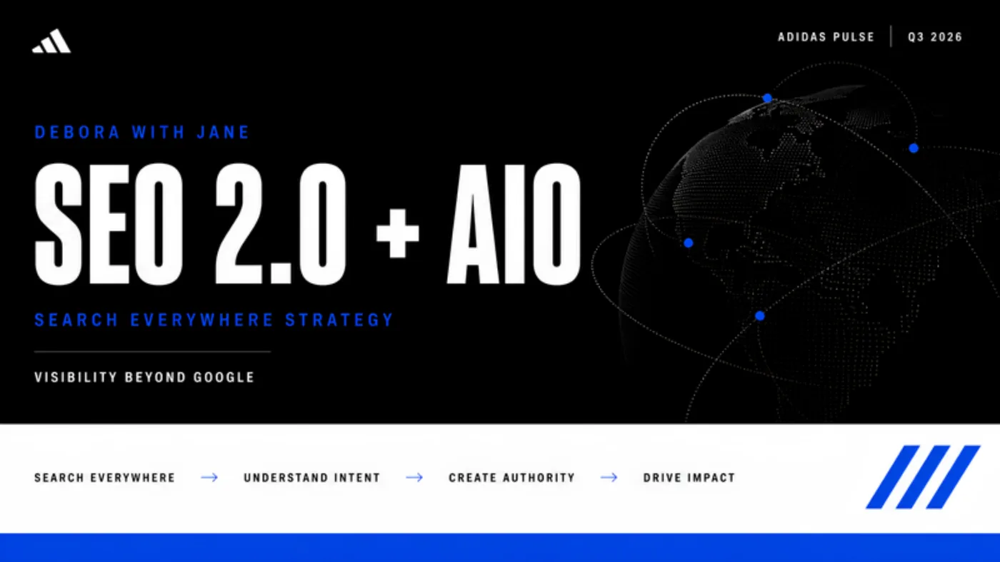
The diagnosis: adidas.com was invisible to AI search
The technical finding that orders everything else: JavaScript rendering was blocking the site’s visibility in AI search channels. Those assistants’ crawlers do not run the site like a browser, so part of the content simply did not exist for them. Before talking about content, the site had to be made readable.
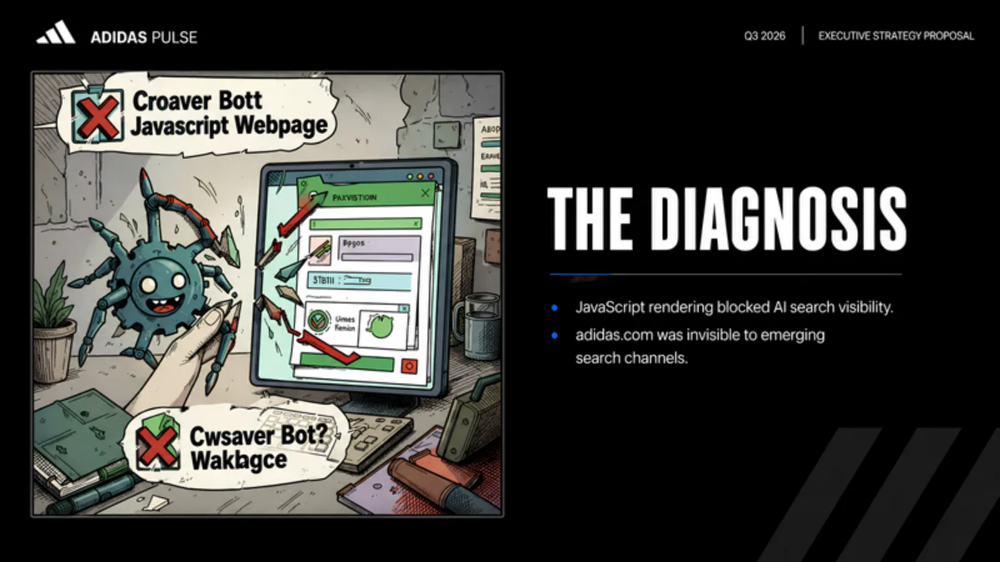
Verifiable authority: authors with a name, a role and evidence
For a search engine or an assistant to trust a piece of content, it has to be able to verify who wrote it. I proposed an E-E-A-T framework (experience, expertise, authoritativeness and trust) with author profiles verified with structured data: a coach who shares routines, a podiatrist who gives foot-health advice, an engineer who explains the product technology. Each profile is a trust signal adidas does not emit today.
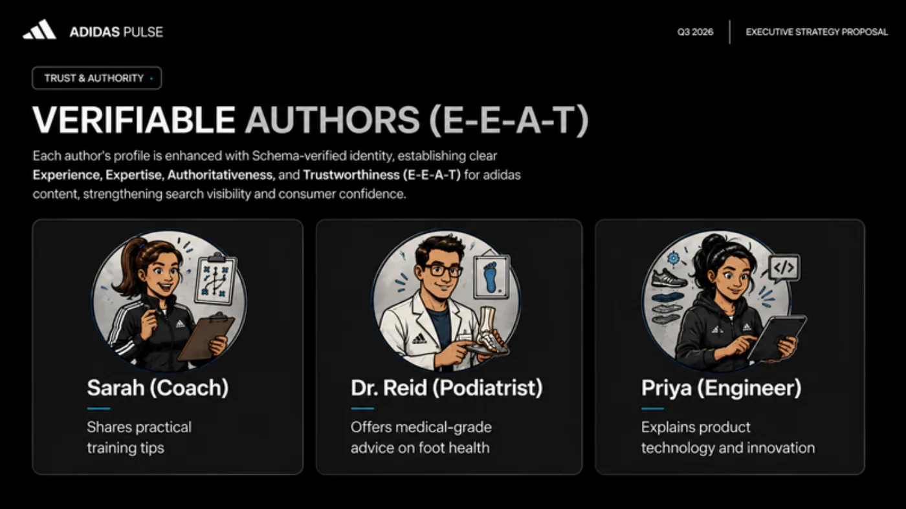
One step from page one
Keywords in Google positions 11 to 30 are the ones that move fastest: they already have content that almost works. I mapped that “striking distance” and combined it with two tools: programmatic SEO (pages generated from product data) and a shoe finder that answers the user’s question instead of showing a catalog. The revenue projection that goes with that map, US$1.6M to 4.7M, is an estimate made for the coursework, not a measurement.
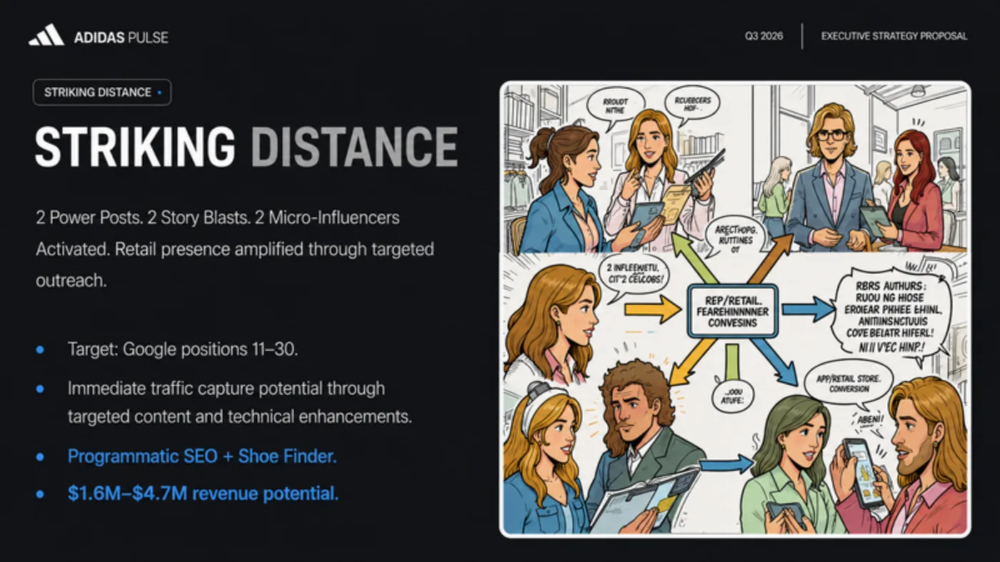
With the rest of the team: social and paid
I coordinated my front with the social and paid fronts so the search-to-sale journey would be a single one. In social, a calendar with seven posts a week and niche creators; in paid, five Google campaigns with one principle: no discount copy. The biggest opportunity that appeared when crossing the data: “on running shoes”, 40.5K searches a month and the competitor not bidding.
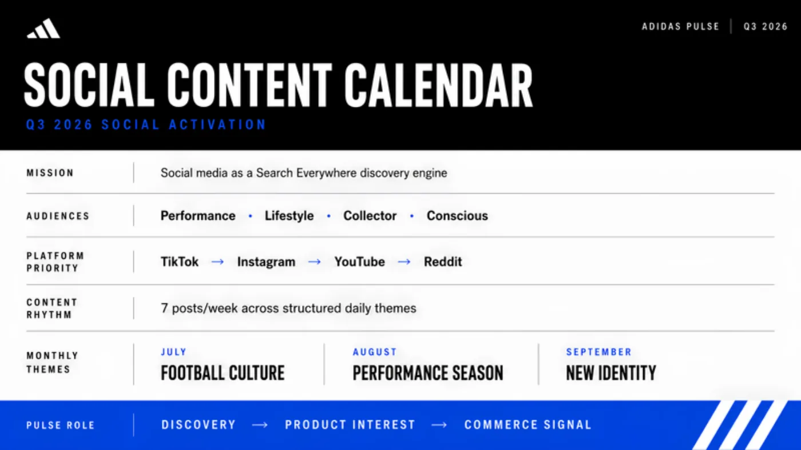
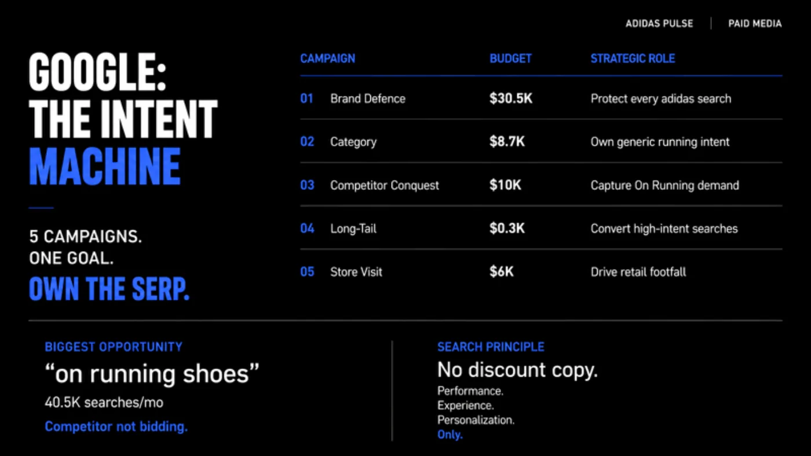
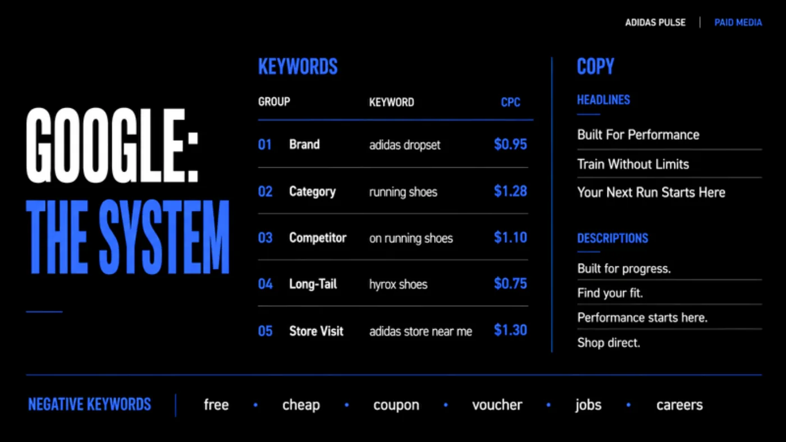
Swipe sideways or use the arrows. Tap a screenshot to enlarge it.
One consumer, four moments
The journey that joins the three fronts: discover with a creator on TikTok, consider by searching on Google (where adidas has to own its own search), come back with a personalized ad on Instagram and buy in the adiClub app. Social, SEO, paid and owned channels, in that order.
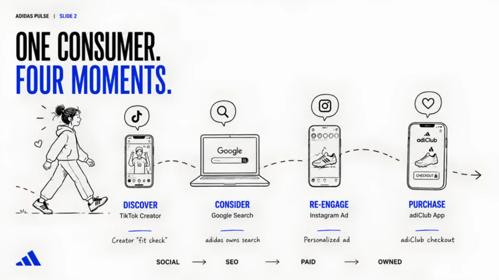
Two numbers to know whether it works
The proposal is measured with two indicators that cross digital and physical: direct-to-consumer revenue share (from around 40% to 47% and 55% in two years) and active adiClub members (from 150 to 200 and 300 million). They are targets proposed in the coursework on the brand’s public baseline. When both grow together, the system is working.
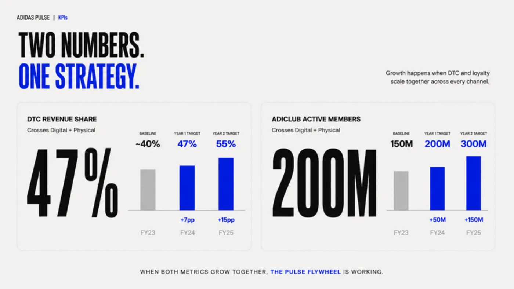
What I took away
Here I proposed, for a global brand, what I later did for real with a real brand: ask AI assistants what they say about the brand, make the site readable for their crawlers and build authority signals. At Kol Accesorios I measured it with 1,520 AI answers analyzed. The seed is in this work.